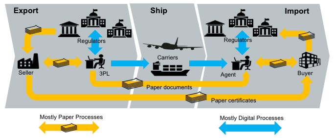
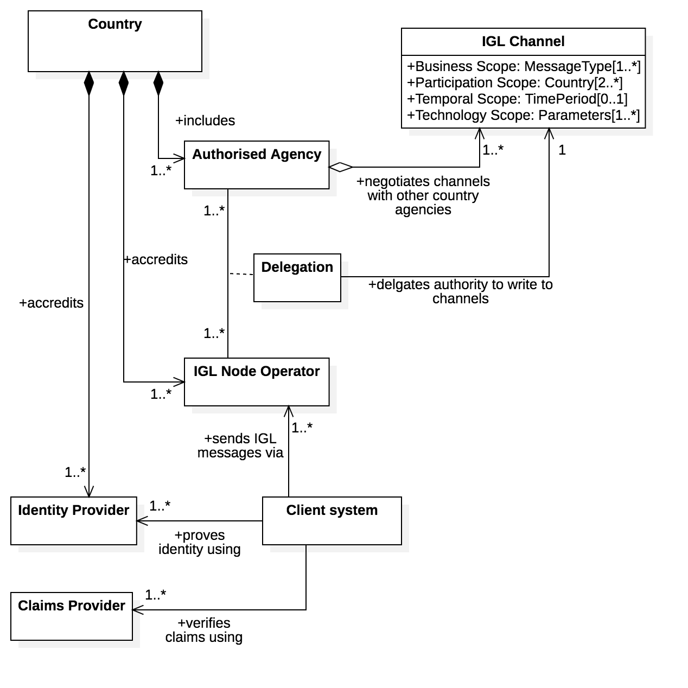
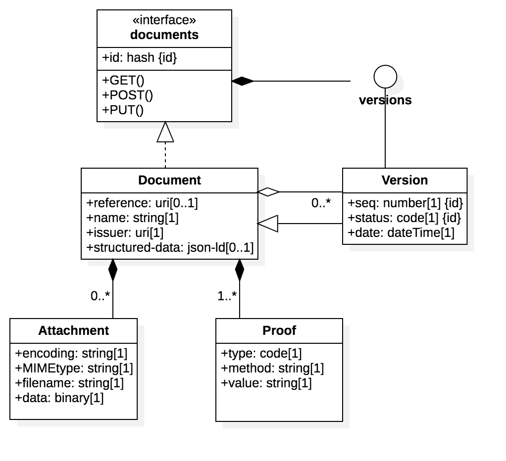
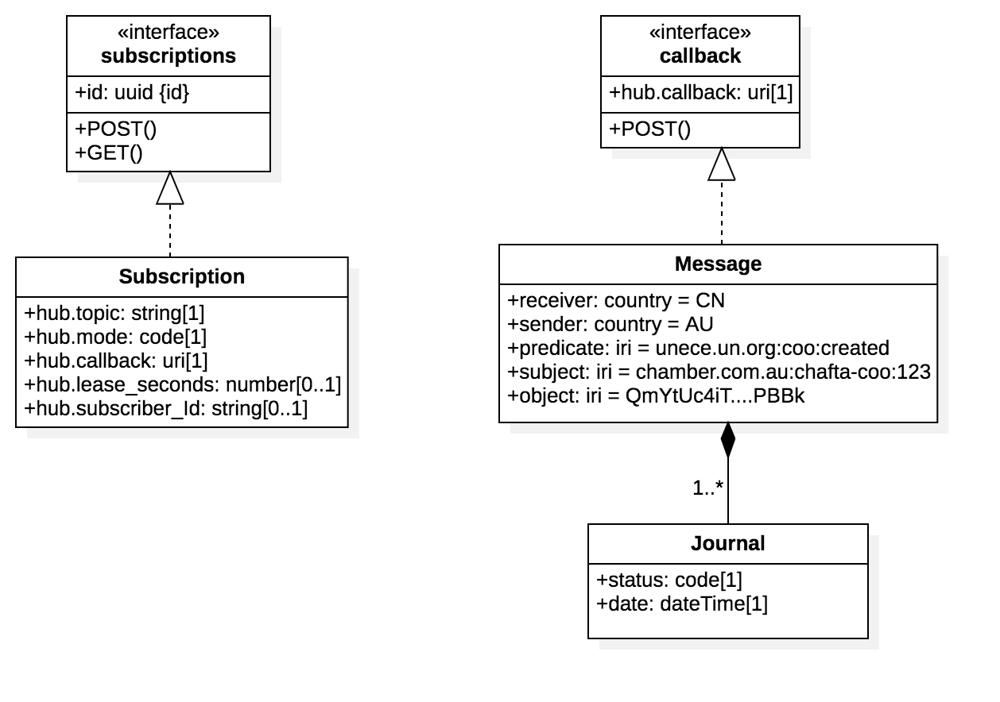
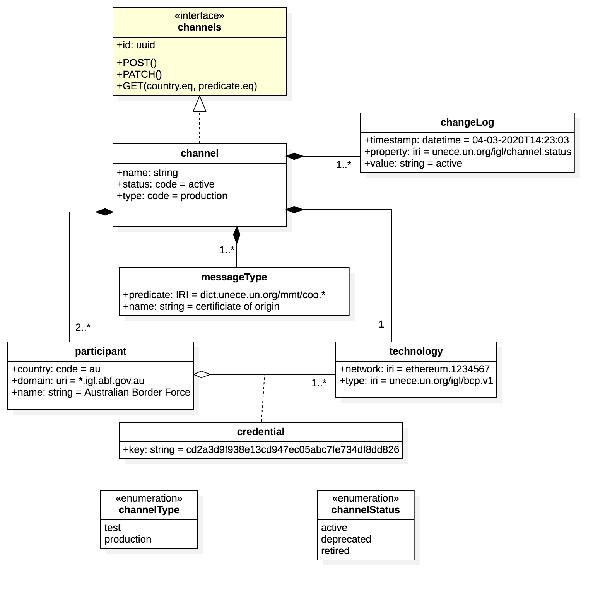
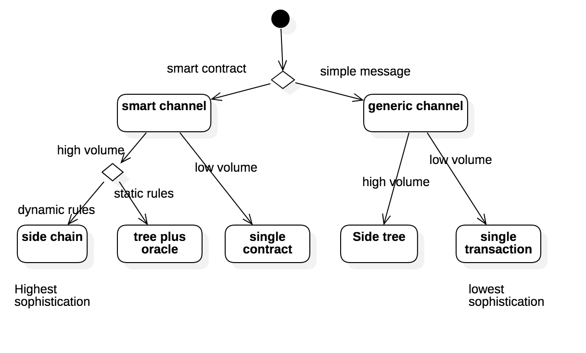

- Spec ID:
IGL/1

- Editor:
- Contributors:
- Export to Doc
- Licence
- Change Process
- Language
- Abstract
- Glossary
- IGL Requirements
- IGL Technical Specification
- IGL Distributed Ledger Technology Implementations
Licence
All material published on edi3.org including all parts of this specification are the intellectual property of the UN as per the UN/CEFACT IPR Policy.
This Specification is free software; you can redistribute it and/or modify it under the terms of the GNU General Public License as published by the Free Software Foundation; either version 3 of the License, or (at your option) any later version. See http://www.gnu.org/licenses.
Change Process
This document is governed by the 2/COSS (COSS).
Language
The key words “MUST”, “MUST NOT”, “REQUIRED”, “SHALL”, “SHALL NOT”, “SHOULD”, “SHOULD NOT”, “RECOMMENDED”, “MAY”, and “OPTIONAL” in this document are to be interpreted as described in RFC 2119.
Abstract
This document describes a technical specification for the trusted transfer of cross-border regulatory documents between government agencies using distributed ledger technology. The use of a distributed ledger approach for G2G document sharing offers several advantages over alternative methods.
- There is no centralised infrastructure - thereby avoiding the need for complex funding models and avoiding a single point of failure or security risk.
- Each country can host trade documents within their jurisdiction, conforming to increasingly strict data sovereignty rules.
- Trade documents can be notarised and verified with very high integrity against tampering or forgery.
- Where appropriate (eg single use certificates), documents as digital assets can be transferred and acquitted following the physical asset movement.
There is no expectation that a single uber-ledger supports all G2G transactions. A specific ledger may service as few as two countries and may be limited to a single process (eg certificates of origin and certificates of non-manipulation) or may service multiple countries and multiple processes. Therefore this specification supports the use of multiple different distributed ledgers (both public and private) by defining a standardised protocol that allows users within a jurisdiction to interact with multiple ledgers via a simple interface.
This document uses Certificates of Origin and Certificates of Non-Manipulation as the guiding use case for the initial specification, however it is intended that the Inter Goverment Ledger should be generic and allow for the transfer of any shipment related documentation between authorised agencies.
Glossary
To-do : replace this section with a simple link to role definitions in the dictionary specification
| Term | Description |
|---|---|
| 3PL | Third Party Logistics Provider (eg freight forwarders) |
| Agent | Intermediaries such as customs agents |
| API | Application Programming Interface |
| Carrier | A provider of transport means/equipment such a shipping line or airline |
| Certifying Body | An organisation that has been accredited to issue one or more certificate types - such as a chamber of commerce or government agency that may issue Certificates of Origin |
| DLT | Distributed Ledger Technology, of which Blockchain is the most common example. |
| Document | When capitalised in this document, this term refers to any document which gives authorisation for an importer or exporter to take some action (or be granted some further authority) with respect to an international shipment of goods. e.g. a Certificate of Origin, a Phytosanitary Certificate, an Export Declaration, etc |
| Exporter | Business or individual that is the seller of internationally traded goods |
| IGL Node | A device on an IGL network which has full visibility of the entire ledger and contributes to the integrity of the ledger by implementing a Consensus Algorithm. Typically operated by a national regulator |
| IGL User | any of the above roles that interact with the IGL (typically via some software application) |
| Importer | Business or individual that is the buyer of internationally traded goods |
| Regulator | A government agency such as a customs authority |
IGL Requirements
Business Context
International trade clearance procedures require a number of documents to be presented to satisfy the requirements of a variety of agreements. For example, in order for an importer to gain preferential tariff treatment under a Free Trade Agreement, the importer must present a valid Certificate of Origin (issued to the exporter) which states that the goods being imported qualify as originating in the country which is party to the agreement. These processes are managed largely by the transfer of paper documents which are subject to loss, alteration and forgery.

In many jurisdictions, significant digitisation progress has been made for interactions between the national regulators (eg customs) and the local regulated community (eg importers, exporters, etc). In Australia for example, 99% of customs documents are already lodged electronically. However there still remains a very significant amount of paper documents that support cross border trade. The majority of the paper documents fit the same pattern; they are issued by a party in the exporting country but required by the regulator of the importing country for goods clearance. One significant reason that paper has been difficult to replace is that there is no direct trust relationship that allows in importing regulator to confirm the identity of the document issuer in the exporting jurisdiction.
An Inter Goverment Ledger (IGL) is proposed as an approach to the transfer of shipment related documents between customs agencies which is immediate, permanent and irrefutable. The Inter Goverment ledger is essentially a trust bridge between national identity schemes - basically the importing regulator trusts the identity of the document issuer because the exporting regulator confirms the issuer identity.

The future state diagram shows the relationship between the IGL and three other key components.
- National single windows and port community systems provide a streamlined and automated means for local entities (traders, 3PL, agents, etc) to interact with their local regulators. Many nations now have some kind of single window system but implementations are varied and usually unique to the local regulatory environment. The IGL can be thought of as a cross-border integration framework between national single windows. However, it is important that the varied and complex national rules do not bleed into the IGL so that integration remains simple.
- National digital identity schemes are emerging in many jurisdictions are provide a way for businesses and individuals in a country to prove their identity to any government agency and to any authorised non-government entity. Business identity schemes are typically linked to public tax registration numbers. Individual identities may be linked to a business identity and will normally include the idea of identity assurance levels which indicate the degree of identity integrity attached to the token holder. This means, for example, that a certificate of origin provided by an exporter to their local customs authority (possibly via a single window) can be passed to the importing authority together with a high integrity identity claim. In this way, the IGL is essentially an international “trust bridge” between national identity schemes.
- Commercial trade data platforms/pipelines are an emerging capability that seek to provide their customers with and-to-end supply chain visibility and management. They are essentially multi-source data aggregators and their scope usually includes some or all of trade, transport, financial, and regulatory data. The data managed by commercial pipelines is not only traditional trade documents (invoices, bills of lading etc) but also IoT streams like data feeds from instrumented smart containers. These platforms can provide significant value to their stakeholders and have a scope much larger than G2G data sharing. The IGL complements these commercial services and does not compete with them.
Architectural Principles
| ID | Principle | Rationale |
|---|---|---|
| P1 | Avoid bleeding any local regulatory complexities into cross-border processes | A strong separation between local complexity and cross border document exchange is essential for scalability. The IGL specification must be as simple as possible in order for update to scale. |
| P2 | Support multiple distributed ledger types & networks | A single global uber-ledger would need to pick a technology winner, would restrict the ability to introduce non breaking extensions, would present a high value attack target, and is unlikely to be supported by every nation. |
| P3 | Coexist nicely with paper processes | A switch from paper processes to native digital documents exchanged via IGL will not happen overnight. Therefore the IGL should add value to existing paper processes and should facilitate a simple and gradual transition from paper to native digital documents. |
| P4 | Leverage the unique position of national regulators | Customs authorities enjoy a unique position as the single convergence point for all imports to and exports from a country. That allows an Inter Goverment ledger to easily achieve complete coverage of bilateral or multilateral trading relationships. |
| P5 | Complement rather than compete with commercial platforms | Regulators are not natural innovators. The ideal IGL will provide a non-competitive platform that leverages the position to regulators to the benefit of their constituents whilst allowing commercial innovation to flourish. |
| P6 | Do not require businesses to provide more than their local regulatory obligations demand. | There may be genuine value to business in using the IGL for cross border processes beyond the regulatory minimum but regulators cannot and should not demand it. Therefore, IGL implementations should define a clear value proposition for every document that exceeds the regulatory minimum. |
| P7 | Assume on-chain data is public | The IGL may be implemented on either public ledgers such as etherium or private ledgers such as hyperledger. In either case, it should be assumed that on-chain data is public since even a private ledger has multiple nodes, each of which has a has a full copy and the privacy of on-chain data cannot be guaranteed. |
High Level Requirements
| ID | Requirement | Solution Links |
|---|---|---|
| R1 | The on-chain IGL data model MUST be simple enough to support any cross border use case. | Link to IGL on-chain data model |
| R2 | The on-chain IGL data SHOULD not contain sensitive or private information | link to threat-risk analysis |
| R3 | A message on the IGL SHOULD provide a mechanism for discovering the full content of the document to which it relates | Link to discovery protocol |
| R4 | Trade documents referenced by the IGL SHOULD be accessible via a consistent API | Link to Repository API |
| R5 | The IGL SHOULD NOT require that the user have any knowledge of the specific ledger technology used (etherium, hyperledger, etc) | link to Message API |
| R6 | The IGL SHOULD NOT assume that the user knows which ledger and which protocol to use in order to exchange a specific document type between two countries. | Link to Routing API |
| R7 | Any Regulator SHOULD be able to participate in the IGL by hosting an IGL Message API that integrates with one or more ledgers | link to participation rules |
| R8 | Participating in the network by hosting a Message API SHOULD NOT automatically grant access to the content of a document | link to access control rules |
| R9 | The IGL SHOULD provide an extension mechanism to allow smart contract to be defined where appropriate for the business context. | Link to smart contract patterns |
| R10 | The IGL MUST provide some mechanism for asserting the validity of a document presented by an importer or exporter | Link to notary / verification API |
| R11 | The IGL MUST provide some mechanism for invalidating a Document | Link to message API |
| R12 | The IGL MUST provide some mechanism for specifying who can perform certain actions with respect to a Document | Link to access control rules |
| R13 | The IGL SHOULD allow any blockchain technology to be used | link to technology plug in architecture |
| R14 | The IGL MUST allow transactions to be written individually or in bulk | link to wire protocol / side tree architecture |
| R15 | The IGL MUST provide a consistent means to support any G2G business process | link to semantic layer architecture |
| R16 | The IGL architecture MUST provide a scalability mechanism to support the volumes that may be required for the world’s largest economies. Up to 1 billion transactions per day | link to scalability architecture |
IGL Technical Specification
Architecture Overview
The IGL specification provides a flexible framework for distributed transaction management between participating countries for the exchange of regulatory or trade documents. The architecture assumes that no single Distributed Ledger Technology or network will be used for all purposes by all countries. The conceptual model is shown below.

Channels
The architecture permits the creation of any number of “channels” that can be used for bilateral or multi-lateral exchange of specific message types. One “channel” supports
- one or more message types drawn from a controlled vocabulary - for example
unece.un.org:regulatory.coo.created - two or more countries - for example “AU, SG”
- one ledger network and technology - eg ethereum
- one validity time period
IGL Nodes
The IGL node layer represents the components deployed one or more node operators in any country that wishes to participate in the inter-government ledger. It provides an abstraction above specific DLT channels but remains agnostic of specific cross-border business processes such as origin data exchange. This layer provides one or more secure document repositories and implements the routing logic for recording channel transactions. THe IGL Node offers 3 standard APIs to the client layer.
- The Message API is used to record messages that include structured data and binary files that represent ledger transactions (eg a Certificate of origin).
- The Subscriptions API is used to subscribe to call backs about the status of ledger transactions (eg the certificate of origin is created / validated / acquitted)
- The channels API is used to query which channels are supported by the IGL node.
Client Applications
The applications layer represents any platform that will make use of the IGL for cross border exchange. THis is the business process specific layer and will typically be represented by single window applications or other trade & logistics applications. The diagram shows a CoO (Certificate of Origin) API as an example but this layer could support any trade document (invoice, Bill of Lading, etc).
Governance Model
The IGL Specification assumes that any country may have several “authorised agencies” that have an existing authority to negotiate bilateral or multi-lateral exchanges with counterpart agencies in other countries. For example
- A Trade Agency may negotiate FTAs and the corresponding exchange of origin data.
- A Border Agency may negotiate secure trade lanes supported by exchange of Authorised Economic Operator (AEO) data and/or export declaration data.
- An Agriculture agency may negotiate the exchange of phytosanitary and other certificates.
Similarly the IGL specification assumes that there may be more than one IGL nodes in any country and that these may be operated internally by an authorised agency or may be operated by accredited third parties. An authorised agency may delegate authority to exchange IGL messages on a channel to one or more node operators.

Client systems may use an IGL node but must be authenticated via an accredited identity provider.
The accreditation schemes for both IGL nodes and identity providers are not defined by this specification because most countries will already have suitable protocols. For example:
- Some kind of trusted identity accreditation framework for identity providers - such as the AU government TDIF
- Some kind of security accreditation framework for node operators - such as the AU government IRAP
Identity providers and node operators SHOULD reference the accreditation framework on their public websites.
API Specifications
There are five API specifications that define the standard interfaces provided by any IGL node.
Document API
The document API is used by authorised IGL clients to submit cross border regulatory or trade documents to an IGL node. The document API is used to submit documents before invoking the message API to advise the other country of the existance of a new document. The document API is also used by receiving jurisdictions to retreive documents that are referenced by an IGL message.

An IGL document MUST conform to the API schema and so always includes:
- A sender specified reference (typically a business identifier like an invoice number)
- A human readable document name (eg “certificate of Origin”)
- The issuer ID (which must also be supported by an identity proof)
- some structured data - using JSON-LD and conforming to a well undertood ontology (JSON-LD @context) that is supported by the IGL channel policy.
- zero or more binary attachments
- one or more W3C Verifiable credential proofs. The mimimum is the identity proof for the issuer.
The ID of the document is always the merkle hash of all binaries, proofs, and structured data that comprise the document. If a document is updated with modified metadata, binaries, or proofs, then the new version will have a new merkel hash and an incremented version sequence number.
OpenAPI 3.0 Specifciation to be added here
Message API
The message API is used by authorised IGL clients to send messages to other countries via channels supported by the node. The messages may reference a previously submitted document using the merkel hash ID of the document as the “object” of the message.

IGL messages are essentially semantic triples (subject, predicate, object) that are sent from a sending jurisdiction to a receiving jurisdiction over an IGL channel that supports the predicate. For example, for a ceritficate of origin sent from Australia to China, the message properties might be
- Sender = AU
- receiver = CN
- predicate = “unece.un.org:coo:created” - defines the type of message (in this case that a certificate of origin has been created) - must be drawn from a well understood ontology and much match the channel policy.
- subject = “chamber.com.au:chafta-coo:123” - defines the identity of the message and must be a unique IRI
- object = a5c841c07663e6992389d27037369d4eb4972cc062f2b962ebadf8599b26fcbf - the merkel hash of the related document.
Messages have a simple state lifecycle (pending, bundled, sent, delivered, failed, withdrawn)
In some cases, channel policy may permit the transmission of additional related information about a message as a further set of semantic triples. In this way, recipients can build semantic graphs of related data (eg certificate of origin 1234 is linked to consignment 5678 that is on voyage 9123)
OpenAPI 3.0 Specifciation to be added here
Subscriptions API
The subscriptions API allows IGL clients to be notiofed when there is a message for them. The IGL subscriptions service will POST any IGL messages that match the subscription pattern to the subscribers callback API.

There are two type of subscribers
- members of the regulated community - can subscribe to updates about messages they have sent (eg keep me updated about CoO number 123)
- regulators - can subscribe to predicate topic streams (ie tell me about all CoOs).
OpenAPI 3.0 Specifciation to be added here
Channel API
to-do : document this to-do : add swagger spec
Registry API
The registry API supports the query of channels on an IGL node channel registry.
- Query operations SHOULD be open to public unauthenticated clients.
- A common public use case is for a client system to determine what message types may be sent to which countries using the node.
- An IGL node MAY choose to hide the existence of some channels from pubkuc queries.

OpenAPI 3.0 Specifciation to be added here
Semantic Model
An IGL message is a semantic triple
- subject - typically the identifier of a thing (eg certificate of origin #123)
- predicate - a named relationship drawn froma controlled vocabulary (eg unece.org:coo:created)
- object - the thing itself (eg the derticate of origin document identified by the hash of the document)
A number of related messages may be sent via the IGL, possibly by different parties in a jurisduiction. The combination of the the messages allows the receiver node to construct a semantic graph or related entities.

to do: add table with specific examples of subject-object-predictates for the graph in the diagram.
to-do: more details
Security Architecture
There are different layers to the security mnodel for IGL as shownb in the diagram below

- Authorised Agencies maintain channel keys that represent their identity on a speciucl ledger channel (eg ethereum). The ksy are provided to the node operator to whom the agency delegates authority to operate a channel.
- G2G security between coiuntries (eg for document API access) is managed using mutual SSL to verify DNS domains of the participating authorised agencies (eg agencyA.gov.xx)
- B2G security within a jurisdiction is managed using OAuth2 federated identity claims.
IGL Node-Channel security
to-do: more details
IGL Node-Node (G2G) security
to-do: more details
IGL client-Node (B2G) security
to-do: more details about claims etc
IGL verifiable claims
to-do: more about verifiable claims
Component Model
A typical IGL node will comprise the high level components illustrated in the diagram below.

- An IGL worker exposes the Message API and is responsible to process IGL messages including secure document storage, routing the the relevant IGL channel, and communicating events to the event manager.
- A document manager exposes the document API and is responsible for the secure storage of documents (both structured data and binaries) that are referenced by a message on a channel.
- An event manager exposes the subscriptions API and allows client systems to subscribe to notifications about messages that they post.
Client sequence
The high level sequence flow for client system interactions with IGL nodes is shown below. Detailed interactions between node components and with IGL channels are not shown.

Assuming that a channel has been established as per the governance model then
- A document issuer using a client system proves their identity via an accredited identity provider (IDP), typically via the OAuth2 protocol, and the resulting token includes the identity of the document issuer.
- The client system POSTs an IGL message to the message API together with an access token from the IDP.
- The IGL node uses message metadata to determine the relevant IGL channel (or returns an error if there is no matching channel)
- The IGL node requests a new transaction of the relevant distributed ledger channel and, once consensus is completed and a block is written, the client is notified via the event manager.
- The counter party on the network detects the new message, gets the document, and notifies any subscribed parties (eg a government agency in country B) of the new message.
- The message is processed by the receiving agency business systems.
- The reverse flow (from country B back to country A) follows exactly the same pattern, except in the opposite direction. A long running conversation is implemented as multiple independent messages correlated via a common subject-id.
Node Sequence
The sequence diagram below elaborates on the detailed interactions between IGL node components and IGL channels that are not shown on the client sequence diagram.

Assuming that public keys of authorised node operators have been exchanged and mapped to persistent identities then
- A new message is received from a client by the message API
- The IGL worker will POST the contained or referenced document to the document API for secure storage. The IGL specification is not prescriptive of document format (see Semantic model section).
- The document API will return a unique fingerprint (multi-hash) of the stored document and will update it’s access control to allow read access by the recipient country authority.
- The IGL worker will determine the relevant IGL channel using “toCountry” and “messageType” fields from the message header and passes the message to the relevant (DLT technology specific) channel node
- The channel node requests a new ledger transaction comprising a semantic triple
- Subject is a unique business identifier for the long running conversation which could be a namespace qualified id such as
chamber.com.au:chafta-coo:123or could be a GUID. - Object is the unique fingerprint (multihash) of the document that is attached to the message and stored in the document repository.
- Predicate is the semantic description of the message represented by the messageType. This must be drawn from a controlled vocabulary (see semantic model) - eg
unece.un.org:coo:created
- Subject is a unique business identifier for the long running conversation which could be a namespace qualified id such as
- The channel completes consensus and writes a new block - this process is specific to the particular DLT technology (eg ethereum or hyperledger).
- once the new block is successfully written the channel node notifies the IGL worker which will send a callback event to all subscribed clients via the event manager.
- The new transaction is observed by the counter party IGL node which reads the transaction (ie the semantic triple)
- The recipient country node GETs the document identified by the Object multihash from the sender country repository. Authentication is via mutual SSL.
- The recipient country IGL node notifies any subscribed clients of the new transaction via the event manager of the recipient IGL node.
Performance & Scalability
Blockchain technology can become prohibitively slow and/or expensive at very high volumes. An IGL node operating in a large economy may need to process a very high volume of transactions. The IGL should be able to handle high volumes without significant performance degradation or cost increases. A benchmark volume target is one billion transactions per day. There are two approaches to increasing volumes on distributed ledgers without significant performance loss.
- The Side-tree is essentially a batch protocol where an arbitrary number of transactions are composed into a Merkel DAG (Directed Acyclic Graph) where each node in the tree contains the hash of transactions at lower levels. Only the top level root of the tree is written to the chain but all transactions inherit the integrity of the chain.
- The side-chain is essentially an independent fork to create a new chain that can include an arbitrary number of new blocks before the fork re-joins the main chain. Side chains are more complex than side trees but allow more dynamic rules (transaction verifications) and can include new stakeholders as side chain node operators that are not part of the main chain.
The combination of performance requirements and channel specific rule/validation requirements leads to a decision tree
